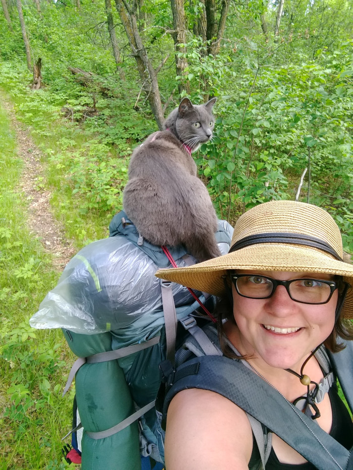
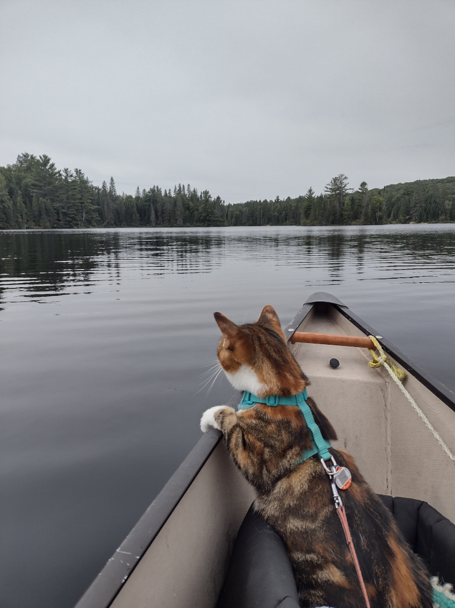

Steffi LaZerte, MSc, PhD
Brandon, Manitoba
Canada, R7A3C4
Phone: 204-717-1720
Email: sel@steffilazerte.ca
Twitter: @steffilazerte
Mastodon: @steffilazerte@fosstodon.org
ResearchGate: http://www.researchgate.net/profile/Stefanie_LaZerte
ORCID: http://orcid.org/0000-0002-7690-8360
GitHub: https://github.com/steffilazerte


Born and bred in Muskoka, Ontario I am a consulting biologist and R programmer. I teach R, handle data management in R and develop R packages for a variety of disciplines in the Natural Sciences.
Beyond R, I’m a behavioural ecologist with an interest in how humans influence behaviour of animals and how citizen science projects can be used to do great science and engage the public.
I enjoy teaching and outreach and try to spread the love of R and make science more accessible.
Outside of research, I love travelling, be it camping locally (with my kitties!) or flying to visit more distant destinations. But I also enjoy stay-at-home activities such as reading, gardening and spinning wool into yarn.
I was honoured to receive the Society of Canadian Ornithologists/Société des ornithologistes du Canada’s inaugural Early Career Research Award for 2017
Beyond a place of work
I live in Brandon, Manitoba, a beautiful place with a long history, both natural and cultural that I wish to acknowledge and cherish.
I appreciate that territorial acknowledgements can be complex and can sometimes be seen as insincere, a quick and easy way of appeasing Truth and Reconciliation.
However, to me, an acknowledgement is a part of reconciliation. It isn’t sufficient, but it’s a first step.
As such, I would like to acknowledge that I live and work in Treaty 2 territory which is the traditional territory of the Dakota, Anishanabek, Oji-Cree, Cree, and Dene peoples as well as the homeland of the Métis Nation.